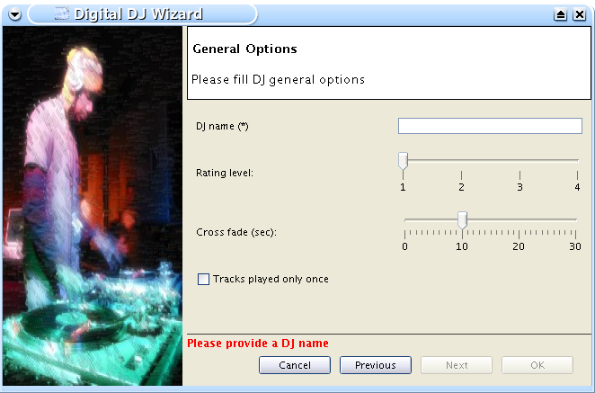

QDWizard : Quick and Dirty Java Swing Wizard API

Jajuk Digital DJ
creation wizard
Context
Within the framework of Jajuk
project, we had to write some complex multi-branching wizard for
several features. After a quick search, it appears that only one Swing
project was maintened and able to match our needs: Wizard Project
from java.net.
However, since this project is well documented, provides
a good support, it is still in early stages, too complex, doesn't
provide i18n and the worst: we didn't manage to make it work and had to
give up after about 20 hours. We tried later the EzBranch
from this project that is not yet merged into the head. This branch is
better and fixes multi-branching issues but brings other issues and
limitations and is not yet officially supported.
Being pretty in a hurry with jajuk, we decided to write a new
API
from scratch. We will decide in the future to switch back to Wizard API
or to enhance
QDWizard instead depending on the Wizard project evolution.
License
Jajuk is released under the LGPL license.
Features
-
Designed to minimize required code. Only three methods to
implement in two classes: getDescription(), getName() and initUI() in
Screen class and getPreviousScreen(), getNextScreen() and finish() in
Wizard class.
-
Simple design, only two classes visible by the programmer
-
I18n support for action buttons (only en, fr, de, sp, ca,
nl for the moment)
-
Full branching support, can implement any wizard cinematic.
-
Error management using a simple setProblem(...) method
-
Supports Wizard images natively (no weird property to set)
and resizes image automaticaly
-
Ultra light API: 4 classes, only few KB.
-
Reactive support as part of the Jajuk
project.
-
Learning curve of 15 minutes maximum.
-
Real world samples provided (jajuk classes)
Documentation
Requirements
- To use QDWizard, add the
qdwizard-<release>.jar to your
CLASSPATH. Note that qdwizard depends upon tablelayout (jar provided).
- JRE 1.5 + only.
Concepts
- A wizard is build of several screens.
- Previous and next screens decision is taken by the wizard
class.
- Wizard data is stored in a Hashtable named data. It is
accessible from Wizard and Screen class. Store and get options selected
by the user here.
Wizard creation
- Create a class that extends Wizard. You have to implement getPreviousScreen(),
getNextScreen()
and finish()
abstract methods.
- finish()
method implements actions to be done at the end of the wizard.
- getPreviousScreen()
and getNextScreen()
have to return previous or next screen class. Example:
public Class getNextScreen(Class screen) {
if (ActionSelectionPanel.class.equals(getCurrentScreen())){
String sAction = (String)data.get(KEY_ACTION);
if (ActionSelectionPanel.ACTION_CREATION.equals(sAction)){
return TypeSelectionPanel.class;
}
else if (ActionSelectionPanel.ACTION_DELETE.equals(sAction)){
return RemovePanel.class;
}
}
}
Screen creation
- For each wizard page, create a public Screen class.
You have to implement initUI(),
getDescription()
and getName()
abstract methods.
- getName method should return the step name and
getDescription the step description (return null if no description
needed).
- initUI method contains graphical code for your screen. This method is
automatically called from screen constructor so don't call it from your
own constructor.
General use
- Set errors using the setProblem(String)
method. The error will be displayed in red to the user at the bottom of
the screen. When error is fixed, use a setProblem(null).
- Get and set wizard data using data object
available from wizard and screen classes.
- Use setCanFinish(true)
method in a screen to set the fact that the screen is
the last one (user can click on Finished button).
Download
The last QDWizard is 1.0(2006/05/13) This zip contains API binaries,
sources and doc for any system supporting Java 1.5+.
Download
it on Jajuk download center.
Samples
Have a look on Jajuk DJ
wizard.
Support
Please use the jajuk
support.
History
- 2006/05/22: [1.2] Fixes and enhancements
- Screens are no more cached to allow user value changes
- Locale can now be set explicitely (no more uses only
the default locale)
- Doc screenshot fix
- 2006/05/19: [1.1] Fixes
- [FATAL] Fixed wrong jajuk Main class dependency
- Fixed wizard size issue if screen too small
- Do not display 'null' if screen description is not
provided
- Fixed documentation and javadoc
- 2006/05/14: [1.0] Initial release
SCRIPT_XITI